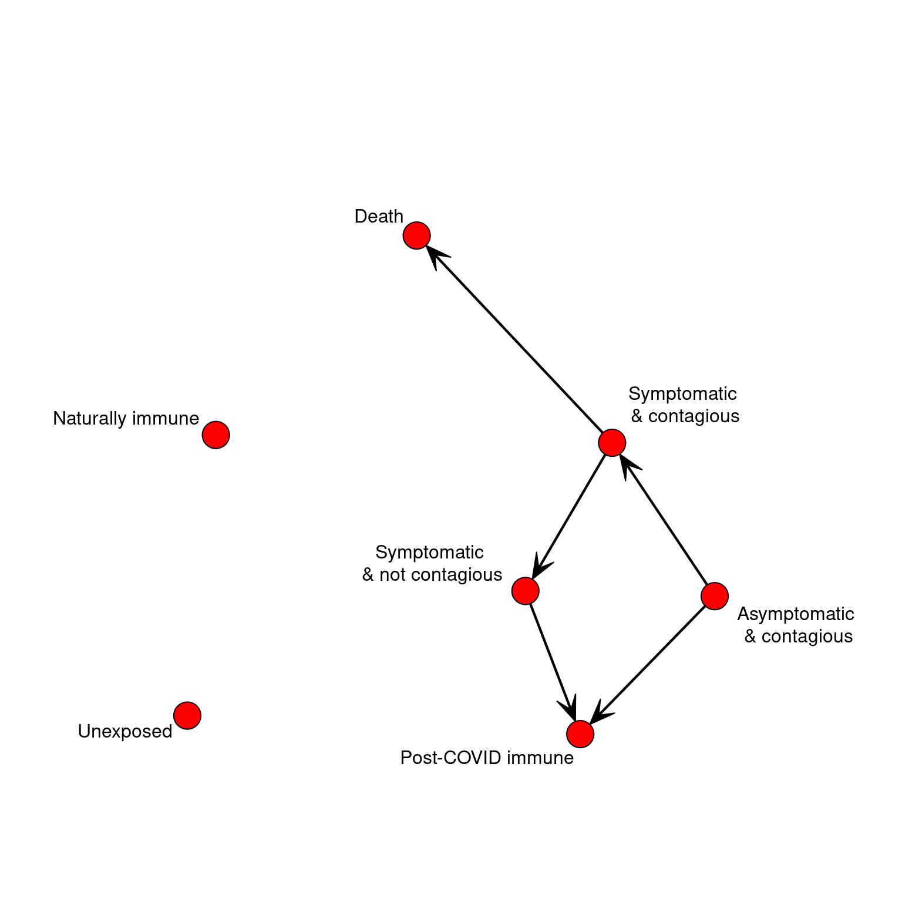
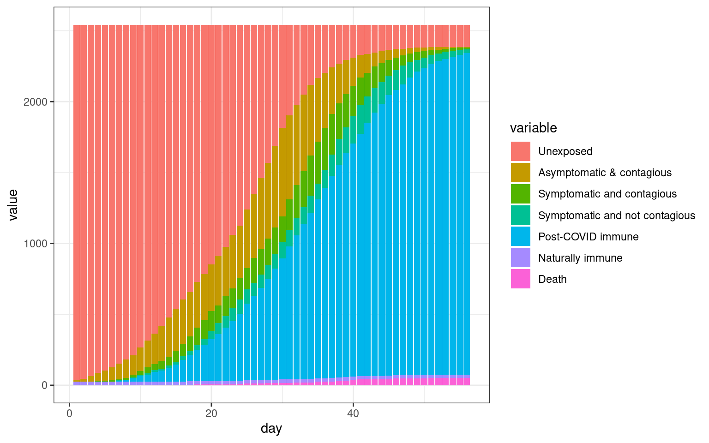
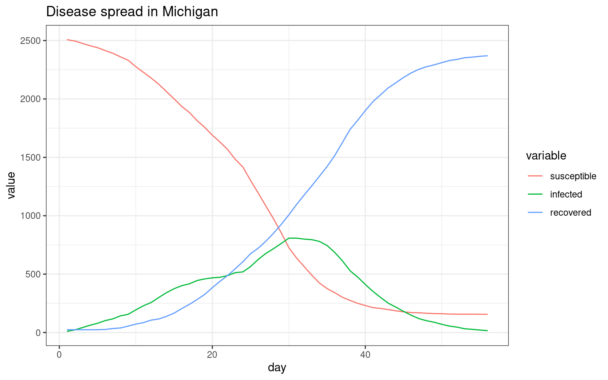

Modeling disease spread with a geographic agent-based model
This model is based on the model/simulation found found here. In this simulation, we generate a network model based roughly on the geographic layout of michigan, in order to explore how geography may impact disease spread.
The agent
The biological state has a few specific cases:
- Unexposed
- Asymptomatic but infected/contagious
- Symptomatic and contagious
- Symptomatic and not contagious
- Post-COVID Immune
- Naturally immune (will not contract)
- Death
We could identify several others, but this might be fine. So, we can define the agent according to just two numbers. We might assume that initially, most people are in bio-state 1, but some would be in state 6 already, which is essentially the same as state 5.
We will just define these as a named list.
##
## Attaching package: 'dplyr'## The following objects are masked from 'package:stats':
##
## filter, lag## The following objects are masked from 'package:base':
##
## intersect, setdiff, setequal, union## Loading required package: statnet.common##
## Attaching package: 'statnet.common'## The following object is masked from 'package:base':
##
## order## Loading required package: network## network: Classes for Relational Data
## Version 1.16.0 created on 2019-11-30.
## copyright (c) 2005, Carter T. Butts, University of California-Irvine
## Mark S. Handcock, University of California -- Los Angeles
## David R. Hunter, Penn State University
## Martina Morris, University of Washington
## Skye Bender-deMoll, University of Washington
## For citation information, type citation("network").
## Type help("network-package") to get started.## sna: Tools for Social Network Analysis
## Version 2.5 created on 2019-12-09.
## copyright (c) 2005, Carter T. Butts, University of California-Irvine
## For citation information, type citation("sna").
## Type help(package="sna") to get started.##
## Attaching package: 'igraph'## The following objects are masked from 'package:sna':
##
## betweenness, bonpow, closeness, components, degree, dyad.census,
## evcent, hierarchy, is.connected, neighborhood, triad.census## The following objects are masked from 'package:network':
##
## %c%, %s%, add.edges, add.vertices, delete.edges, delete.vertices,
## get.edge.attribute, get.edges, get.vertex.attribute, is.bipartite,
## is.directed, list.edge.attributes, list.vertex.attributes,
## set.edge.attribute, set.vertex.attribute## The following objects are masked from 'package:dplyr':
##
## as_data_frame, groups, union## The following objects are masked from 'package:stats':
##
## decompose, spectrum## The following object is masked from 'package:base':
##
## union#library(animation)
STATES <<- 7
STATENAMES <<- c("Unexposed",
"Asymptomatic & contagious",
"Symptomatic and contagious",
"Symptomatic and not contagious",
"Post-COVID immune",
"Naturally immune",
"Death")
STATELABELS <<- c("Unexposed","Asymptomatic\n & contagious",
"Symptomatic \n& contagious",
"Symptomatic \n& not contagious",
"Post-COVID immune",
"Naturally immune",
"Death")
makeAgent <- function(psychstate,biostate,age=30)
{
return (list(psychstate=psychstate,
biostate=biostate,
age=age,
nextbiostate=NA,
biostatecountdown=NA))
}
print(makeAgent(1,2))## $psychstate
## [1] 1
##
## $biostate
## [1] 2
##
## $age
## [1] 30
##
## $nextbiostate
## [1] NA
##
## $biostatecountdown
## [1] NACreate transition matrix.
If on each timestep we could move between states probabilistically, this would be a markov process. We could represent this by a simple transition network. If we represented the possible transitions in a network, that would simplify the logic above. But we need more like a task network because the time taken to transition matters. To keep it simple, Let’s make all timing distributions uniform with a min and max parameter for time in each state. We can program two pathways through the stages, with a couple branch points (death vs recovery; the possibility of recovering after acquiring with no symptoms). The progression of the disease is completely specified by the data, and a generic update function will automatically progress the agent each day.
# * 1. Unexposed
# * 2. Asymptomatic but infected/contagious
# * 3. Symptomatic and contagious
# * 4. Symptomatic and not contagious
# * 5. Post-COVID Immune
# * 6. Naturally immune (will not contract)
# * 7. Death
bioTransition <- matrix(0,STATES,STATES)
bioMin <- matrix(1,STATES) #state time minimum
bioMax <- matrix(1,STATES) #state time maximum
bioMin[2] <- 3 #infected but asymptomatic for 3 to 10 days
bioMax[2] <- 10
bioTransition[2,3] <- .5 #transition to infected with symptoms
bioTransition[2,5] <- .5 #transition to no longer contagious/cured
bioMin[3] <- 3 #symptoms + contagion
bioMax[3] <- 8 #symptoms + contagion max
bioTransition[3,4] <- .95 #transitioon to no longer contagious
bioTransition[3,7] <- .05 #transitioon to death state
bioMin[4] <- 1 #symptoms bot no longer contagiious
bioMax[4] <- 7
bioTransition[4,5] <- 1 #Transition to 'immune' cured state.
setAgentState<- function(agent, biostate)
{
agent$biostate <- biostate
if(sum(bioTransition[biostate,])>0) # this state transitions to something else.
{
##which state do we go to?
agent$biostatecountdown <- sample(x=seq(bioMin[biostate],bioMax[biostate]),1) #how long will we state in this state?
agent$nextbiostate <- sample(1:STATES, prob=bioTransition[agent$biostate,],size=1)
} else{
agent$biostatecountdown <- NA
agent$nextbiostate <- NA ##just so we can tell if the agent is finished.
}
return(agent)
}
transitionAgent<- function(agent)
{
return(setAgentState(agent,agent$nextbiostate))
}
updateAgent<- function(agent)
{
if(!is.na(agent$biostatecountdown))
{
agent$biostatecountdown <- agent$biostatecountdown -1
if(agent$biostatecountdown <=0) ##new state
{
agent <- transitionAgent(agent)
}
}
return(agent)
}
mygplot <- function(coord, network,states,main="")
{
if(is.null(coord))
{
coord <- gplot.layout.fruchtermanreingold(network,layout.par=list(niter=500))
}
newmin <- mean(coord[,2]) - (-min(coord[,2]) + mean(coord[,2])) * 1.4
palette=c("white","yellow","red","green","darkgreen","blue","black")
plot(coord,col="black",bty="n",pch=16,cex=2.7,xaxt="n",yaxt="n",main=main,xlab="",
ylab="",axes=F,
ylim=c(newmin,max(coord[,2])),type="n")
for(i in 1:nrow(network))
segments(coord[i,1],
coord[i,2],
coord[network[i,]==1,1],
coord[network[i,]==1,2],col="grey40")
points(coord,pch=16,cex=2.3,col= palette[states])
points(coord,pch=1,cex=2.3,col="black")
legend(mean(coord[,1]),min(coord[,2]),bty='n',y.intersp=.7,cex=.8,
STATENAMES, pch=16,col=palette)
return (coord)
}Modeling michigan county data.
#library(readxl)
counties <- read.csv("MI_Counties.csv")
numcounties <- nrow(counties) ##83
plot(counties$LON,counties$LAT,pch=16,cex=3)countydist <- as.matrix(dist(cbind(counties$LON,counties$LAT*2)))
ranks <- apply(countydist,1,rank)
nearby <- 0+(ranks<7 | countydist<.85 )
coords <- data.frame(LON=counties$LON,LAT=counties$LAT*2)
coords$UP <- coords$LAT>91.05
mygplot(coord=coords[,1:2],nearby,states=coords$UP+1)## LON LAT
## 1 -83.5938 89.3708
## 2 -86.6018 92.8198
## 3 -85.8884 85.1826
## 4 -83.6277 90.0696
## 5 -85.1377 90.0006
## 6 -83.8948 88.1312
## 7 -88.3652 93.3252
## 8 -85.3090 85.1900
## 9 -83.9921 87.4144
## 10 -86.0158 89.2790
## 11 -86.4123 83.9092
## 12 -85.0590 83.8322
## 13 -85.0055 84.4932
## 14 -85.9936 83.8306
## 15 -85.1283 90.6040
## 16 -84.4999 90.8936
## 17 -84.5921 92.6062
## 18 -84.8478 87.9758
## 19 -84.6015 85.8872
## 20 -84.6103 89.3672
## 21 -86.9244 91.8394
## 22 -87.8704 92.0182
## 23 -84.8384 85.1922
## 24 -84.8905 91.0410
## 25 -83.7067 86.0434
## 26 -84.3882 87.9812
## 27 -89.6944 92.8178
## 28 -85.5590 89.3418
## 29 -84.6048 86.5854
## 30 -84.5930 83.7756
## 31 -88.6918 93.7868
## 32 -83.0193 87.6666
## 33 -84.3736 85.1942
## 34 -85.0746 85.8902
## 35 -83.6360 88.7118
## 36 -88.5305 92.4174
## 37 -84.8467 87.2812
## 38 -84.4233 84.4970
## 39 -85.5311 84.4908
## 40 -85.0902 89.3692
## 41 -85.5492 86.0644
## 42 -88.4287 95.2208
## 43 -85.8017 87.9800
## 44 -83.2218 86.1802
## 45 -85.8123 89.8732
## 46 -84.0664 83.7902
## 47 -83.9115 85.2060
## 48 -85.5443 92.9414
## 49 -85.0921 92.1624
## 50 -82.9322 85.3912
## 51 -86.0571 88.6664
## 52 -87.6415 92.8628
## 53 -86.2497 87.9908
## 54 -85.3245 87.2818
## 55 -87.5573 91.1584
## 56 -84.3879 87.2936
## 57 -85.0947 88.6746
## 58 -83.5373 83.8584
## 59 -85.1524 86.6220
## 60 -84.1273 90.0552
## 61 -86.1481 86.5824
## 62 -85.8009 87.1084
## 63 -83.3855 85.3208
## 64 -86.2673 87.2814
## 65 -84.1266 88.6698
## 66 -89.3150 93.3288
## 67 -85.3252 87.9798
## 68 -84.1297 89.3634
## 69 -84.5988 90.0428
## 70 -85.9939 85.9202
## 71 -83.9173 90.6804
## 72 -84.6116 88.6712
## 73 -84.0532 86.6700
## 74 -82.8201 86.8470
## 75 -86.1995 92.3934
## 76 -84.1467 85.9074
## 77 -82.6823 85.8850
## 78 -85.5278 83.8290
## 79 -83.4168 86.9282
## 80 -86.0189 84.5026
## 81 -83.8384 84.5068
## 82 -83.2865 84.5680
## 83 -85.5785 88.6768#matrix(NA,nrow=nrow(countydist),ncol=nrow(countydist))
numAgents <- 2500
simPop <- ceiling(counties$Population/sum(counties$Population) * numAgents)
numAgents <- sum(simPop)
whichcounty <- rep(1:numcounties,times=simPop)
inUP <- coords$UP[whichcounty]
##Create the network
withincounty <- outer(whichcounty,whichcounty,"==")
betweencounties <- matrix(NA,numAgents, numAgents)
for(i in 1:numAgents)
{
for(j in 1:numAgents)
{
betweencounties[i,j] <-runif(1) < .5* nearby[whichcounty[i],whichcounty[j]]
}
}
#gplot(withincounty+betweencounties)
socialnetwork <- (withincounty + betweencounties) > 0 #this is where we make the whole network. either T or 1, or F/2.
coords2 <- cbind(coords[whichcounty,1] + rnorm(numAgents)*.15,
coords[whichcounty,2] + rnorm(numAgents)*.15)
if(TRUE)
{
cc <-mygplot(coord=coords2,socialnetwork,rep(1,nrow(socialnetwork)),main="Initial state")
}##Now, make the social network combine within and between county data. Simulate disease spread.
#mygplot(coord=coords2,socialnetwork,
# states=rep(1,numAgents))
numDays <- 56
naturalImmunity <- .01
numInteractions <- rep(10,numDays) ##how many interactions per day per agent on average initially?
contagionProb <- rep(.05,numDays) ##normal contagian probability after contact
sampleFromNetwork <- rep(1.0,numDays) ##how likely you are to stick with 'your' network
numInteractions[5:numDays] <- 5
numInteractions[25:numDays] <- 10
plotNetwork <- TRUE
#re-use previous network
#socialnetwork <-makeNetwork(numAgents,numsets=1,power=.5)
if(plotNetwork)
{
cc <-mygplot(coord=coords2,socialnetwork,rep(1,nrow(socialnetwork)),main="Initial state")
}disthistory <- matrix(NA,ncol=7,nrow=numDays)
disthistory.up <- matrix(NA,ncol=7,nrow=numDays)
pool <- list()
for(i in 1:numAgents)
{
pool[[i]] <- makeAgent(psychstate=1,
biostate=sample(c(1,6),
p=c(1-naturalImmunity, naturalImmunity),1))
}
##Here we can decide who gets infected first:
##infect patient 0
numInfected <- 5
for(i in sample(numAgents,numInfected))
{
pool[[i]] <- setAgentState(pool[[i]],2) ##infect this person
}
for(day in 1:numDays)
{
##who are you going to talk to today.
sneezers <- rep(1:numAgents,each=numInteractions[day])
sneezedons <- rep(NA,length(sneezers))
for(i in 1:length(sneezers))
{
if(runif(1)<(1-sampleFromNetwork[day]) )
{
sneezedons[i] <- sample(numAgents,1)
}else{
sneezedons[i] <- sample(1:numAgents,prob=socialnetwork[sneezers[i],],1)
}
}
for(i in 1:length(sneezers))
{
agent1 <- pool[[ sneezers[i] ]]
agent2 <- pool[[ sneezedons[i] ]]
##this constitutes the rules of infection.
if((agent1$biostate==2 || agent1$biostate==3 ) & agent2$biostate==1 & runif(1)<contagionProb[day])
{
pool[[ sneezedons[i] ]] <- setAgentState(agent2,2)##infect!
}
}
##increment each agent 1-day.
for(i in 1:numAgents)
{
pool[[i]] <- updateAgent(pool[[i]])
}
states <- sapply(pool,FUN=function(x){x$biostate})
states.up <- sapply(pool[inUP],FUN=function(x){x$biostate})
distrib <- table(factor(states,levels=1:7))
distrib.up <- table(factor(states.up,levels=1:7))
disthistory[day,] <- distrib
disthistory.up[day,] <- distrib.up
if(plotNetwork)
{
mygplot(cc,socialnetwork,states,main=paste("Day",day))
}
}
Plot final state
Progress in state vs. UP only. Growth for UP and for entire state.
disthist.df <-as.data.frame(disthistory)
colnames(disthist.df) <- STATENAMES
disthist.df$day <- 1:nrow(disthistory)
histlong <- melt(disthist.df,id.vars="day")
ggplot(histlong,aes(x=day,y=value,fill=variable)) + geom_bar(stat="identity",position="stack") +
theme_bw()
##make the SIR plot:
sir <- data.frame(day=disthist.df$day,
susceptible = disthist.df$Unexposed,
infected = disthist.df[,2]+disthist.df[,3],
recovered = rowSums(disthist.df[,4:7]))
ggplot(melt(sir,id.vars="day"),aes(x=day,group=variable,y=value,color=variable)) + geom_line() + theme_bw()+ ggtitle(label="Disease spread in Michigan")
##Now, do UP only
disthist.df <-as.data.frame(disthistory.up)
colnames(disthist.df) <- STATENAMES
disthist.df$day <- 1:nrow(disthistory.up)
histlong <- melt(disthist.df,id.vars="day")
ggplot(histlong,aes(x=day,y=value,fill=variable)) + geom_bar(stat="identity",position="stack") +
theme_bw() + ggtitle(label="Disease spread in Upper Peninsula Michigan")##make the SIR plot:
sir <- data.frame(day=disthist.df$day,
susceptible = disthist.df$Unexposed,
infected = disthist.df[,2]+disthist.df[,3],
recovered = rowSums(disthist.df[,4:7]))
ggplot(melt(sir,id.vars="day"),aes(x=day,group=variable,y=value,color=variable)) + geom_line() + theme_bw() + ggtitle(label="Disease spread in Upper Peninsula Michigan")##can model each county as an SIR. Can model larger numagents, but it takes forever to run.